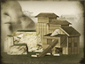

Requires
- Buildings: 
Basic Building Statistics (can be modified by difficulty level, arts, skills, traits and retainers)
- Cost: 10000
- -15% to the cost of modern units in this province
- +30 tonnes of high quality copper
- +5 per turn to town growth from trade within this province
- +400 to wealth generated by mines in this province
- -2 to happiness from modernisation
Clan Effects
- -5% to the cost of modern units across all provinces
- +3 to modernisation (clan development)
Description
There is wisdom in foreigners: the copper-bottomed guarantee for a start!
This province contains enough copper deposits to be worth mining. With further investment and time, these will become even more profitable, and enable ships to be constructed with copper bottoms. Copper mining and, more particularly, refining and smelting the metal, are unpleasant and polluting businesses. This is outweighed, though, by the benefits of having industrial amounts of copper available. Many early telegraph cables, including undersea ones, were made from copper wire as the metal has low resistance to electric currents. However, its uses in shipbuilding were more relevant to anyone warlike: plating the bottom of a ship with copper sheets stopped all kinds of marine worms, and prevented barnacles and weeds from getting a hold on the hull. Ships lasted longer, were cheaper to maintain because they needed fewer repairs, and could achieve a better top speed for much of their service life.